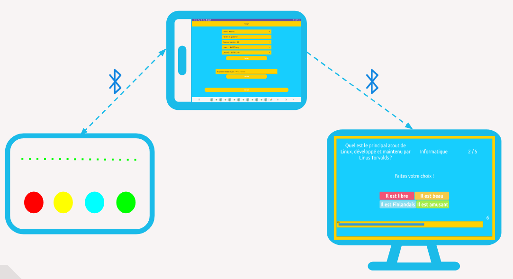
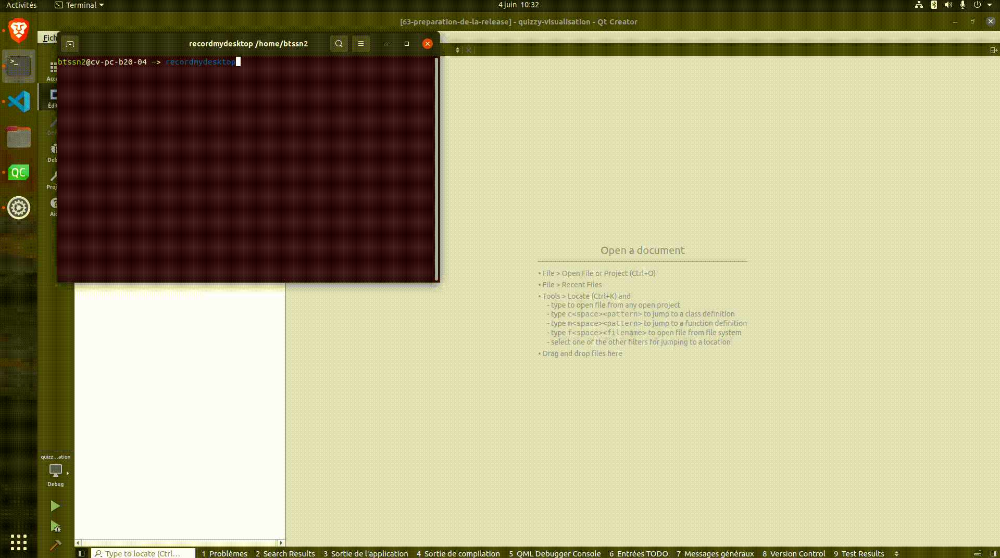
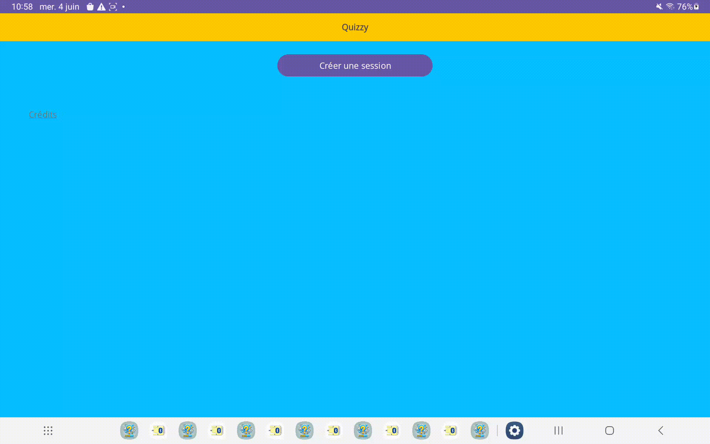
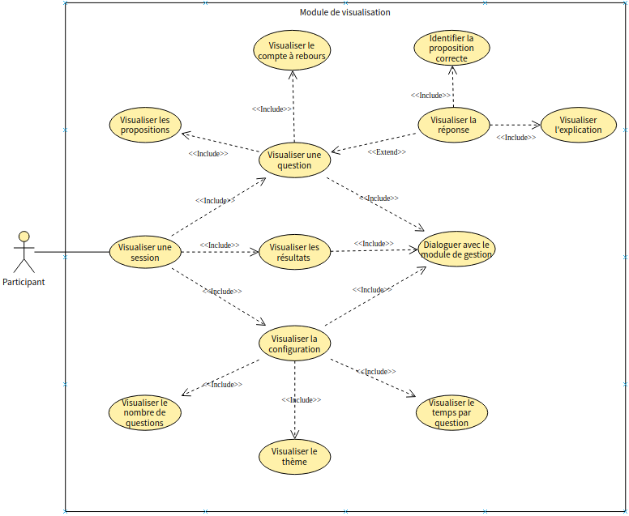
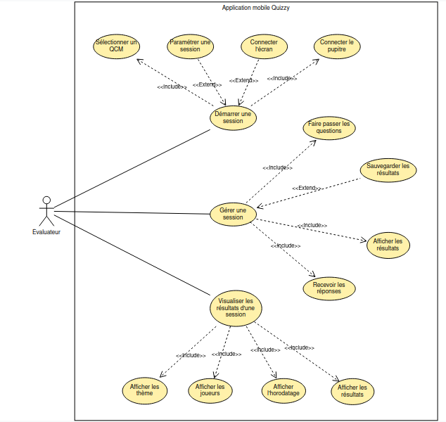
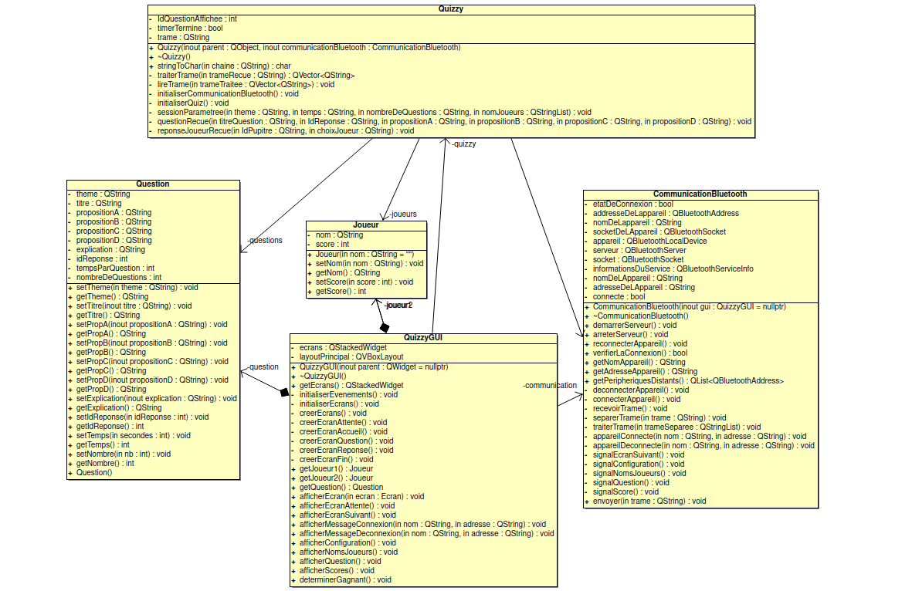
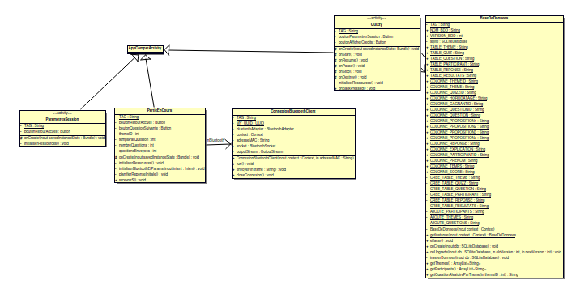
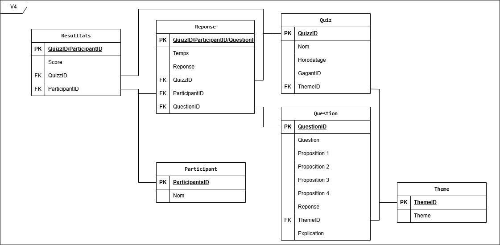
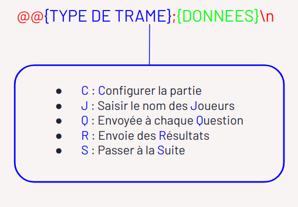
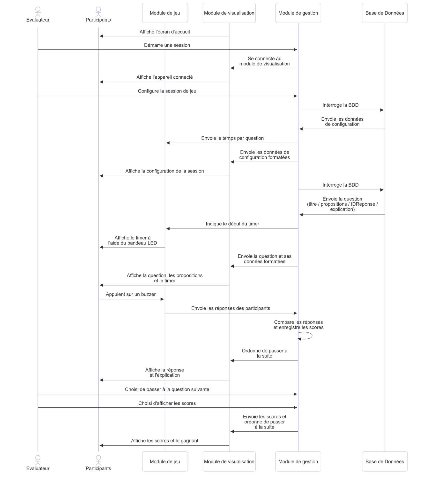

Projet BTS CIEL 2025 : Quizzy
Présentation
QUIZZY est un système numérique d'évaluation ludique sous forme de questionnaire à choix multiple (QCM) où une question est posée et la réponse est à choisir parmi un ensemble de propositions.
Il se pratique à plusieurs autour de plusieurs pupitres et d’un écran principal. Un pupitre est composé :
- 4 buzzers (bouton poussoir de type arcade)
- un bandeau leds multicolores
- un écran (en option)
L’évaluateur dispose d’une tablette permettant d’assurer la session d’évaluation.
Le système QUIZZY est décomposé en trois modules :
- Module de gestion de quiz (Tablette-QUIZZY)
- Module de jeu (Pupitre-QUIZZY)
- Module de visualisation (Écran-QUIZZY)
Les modules communiquent via le Bluetooth :

Fonctionnalités
- Module de visualisation (Qt/Raspberry Pi)
| Fonctionalités | A faire | En cours | Terminé |
| Visualiser une session | | | O |
| Visualiser une question | | | O |
| Visualiser les propositions | | | O |
| Visualiser un compte à rebours | | | O |
| Visualiser les résultats | | | O |
| Dialoguer avec le module de gestion | | | O |
| S'afficher en mode "kiosque" | | | O |

- Module de gestion (Java/Android)
| Fonctionalités | A faire | En cours | Terminé |
| Démarrer / stopper une session | | | O |
| Sélectionner un thème | | | O |
| Dialoguer avec le module de visualisation | | | O |
| Dialoguer avec le module de jeu | | | O |
| Gérer une session | | | O |
| Paramétrer la session | | | O |
| Sauvegarder les résultats | | O | |
| Visualiser un historique | | O | |

Diagrammes de cas d'utilisation

- Module de gestion

Diagrammes de classes

- Module de gestion

Base de données
cf. ldd.sql

Protocole


Gestion de projet
GitHub Project
Itération 1
Du 29 Janvier au 28 Mars
- Mise en place de la BDD : la base de données est fonctionnelle
- Envoyer des questions : le module de gestion envoie des questions au module de visualisation
- Envoyer des propositions : le module de gestion envoie des propositions au module de visualisation
- Recevoir : le module de visualisation reçoit et traite les trames
- Afficher des questions : le module de visualisation affiche les questions reçues
- Afficher des propositions : le module de visualisation affiche les propositions reçues
Itération 2
Du 29 Mars au 23 Mai
- Configurer une session : l'utilisateur peut choisir le thème, le nombre de question et le temps pour répondre
- Chronométrer : les questions s'arrêtent à la fin du temps imparti
- Afficher le chronomètre : le temps pour répondre est affiché
- Afficher la réponse : la réponse est affichée une fois le temps écoulé
Itération 3
Du 24 Mai au 30 Mai
- Sauvegarder les résultats : les résultats sont enregistrés à la fin d'une session
- Afficher l'historique : l'utilisateur à la possibilité d'afficher l'historique
- Afficher les scores : les scores sont affichés
- Mode kiosk : l'affichage est configuré en mode kiosk
Itération 4
Du 31 Mai au 15 Juin
- Amélioration de l'affichage : l'interface utilisateur est plus claire et intuitive
- Recommencer des parties : possibilité de relancer une partie
Changelog
Version 1.0
- [x] Dialoguer entre les modules gestion / visualisation
- [x] Configurer une session
- [x] Gérer le déroulement d'une session
- [x] Visualiser une session
- [x] Chronométrer les questions
- [x] Visualiser les scores
TODO
Version 1.1
- [ ] Dialoguer avec le module de jeu
- [ ] Recommencer des parties
- [ ] Enregistrer les scores
- [ ] Afficher un historique
Défauts constatés non corrigés
Certaines questions peuvent se répéter au sein d'une même session de jeu.
Équipe de développement
© 2024-2025 LaSalle Avignon